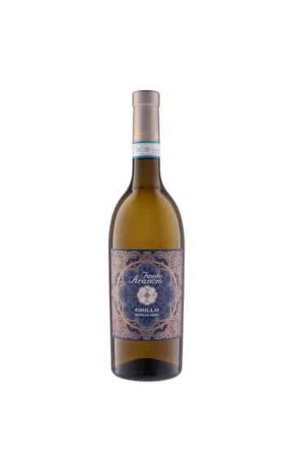
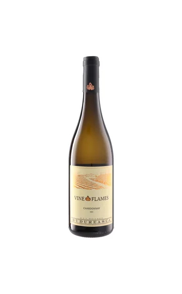
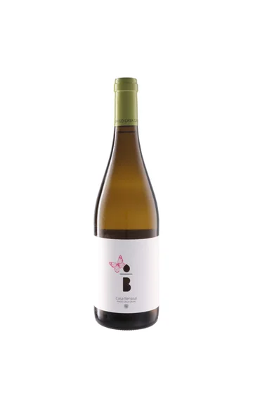
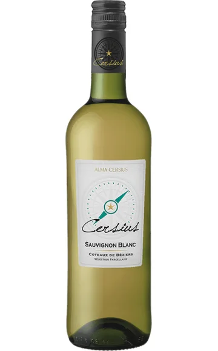
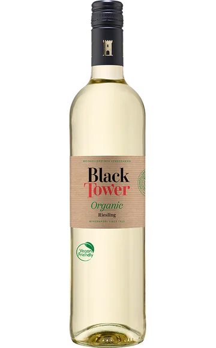
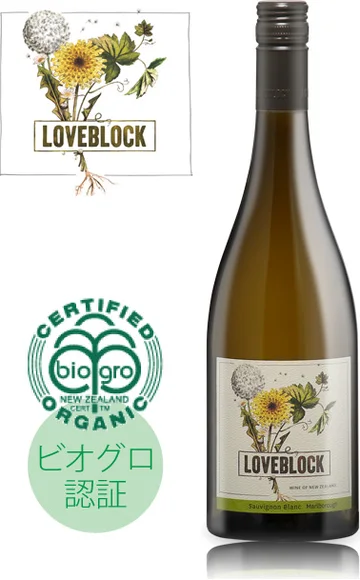
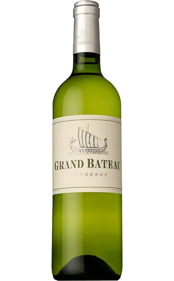
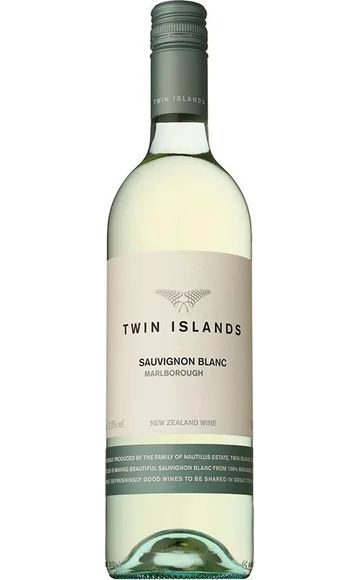
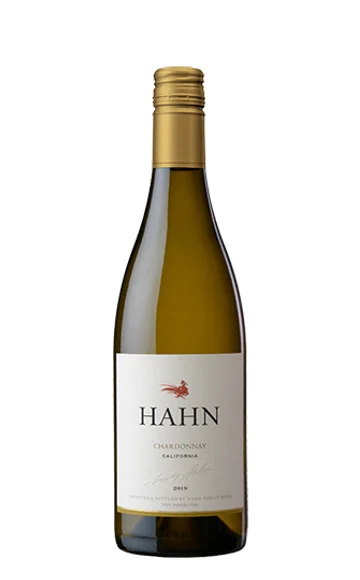
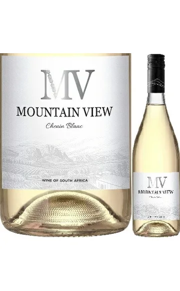

WINE JOURNAL
3,000円以下の
安ウマ白ワイン10選
香りと余韻で、自分好みの一本に出会う。
「白ワインは好き。でも、いつも同じ一本を選んでしまう」。そんな方へ、税込3,000円以下の白ワインを10ブランドから選びました。爽やかなソーヴィニヨン・ブラン、樽の風味を楽しむシャルドネ、グリッロやシュナン・ブランなど、入口はいろいろ。東京のワイン会で知った品種を試したいときや、友人との交流会に持ち寄る一本の参考にしてください。
選定基準・価格について
選定条件：モトックス、日本リカー、サザンクロス、ファインズ、WINE TO STYLEの取り扱いから選んでいます。泡・白・赤の3記事を通じ、同じブランドは重複させていません。
価格確認日：2026年10月21日。参考販売価格は各リンク先で確認した750ml・1本の税込価格です。送料・クール便料金は別途。市場平均・最安値ではなく、割引価格を含む販売例です。価格・在庫・年号は変わるため、購入時にご確認ください。
ワイン会で楽しむ、白ワインの選び方
爽やかさを比べるならソーヴィニヨン・ブランの産地違い、厚みを楽しむならシャルドネ、いつもと違う香りを探すならゲヴュルツトラミネールのブレンドへ。品種か産地のどちらか一つを比較の軸にすると、知識がなくても感想を交わしやすくなります。

01 / WHITE
フェウド・アランチョ グリッロ
¥1,815税込・参考価格
イタリア／シチリア
輸入元：モトックス750ml
白桃を思わせる果実の香りに、紅茶やジャスミンのニュアンス。シチリアの白ブドウ、グリッロを知りたい方への入口になる一本です。丸みのある味わいに酸が重なり、後味にはほのかな苦みも。シャルドネ以外の白を探したいとき、土着品種に目を向けるきっかけとして選んでみてください。
PAIRING / 料理の提案魚介のパスタ、レモンを添えたチキン。
TALK / ワイン会での楽しみ方果実味だけでなく、後味の苦みが料理とどうつながるか比べてみましょう。
商品情報を見る ↗
価格・写真の参照元
価格確認先：UNCORK（モトックス直営） ↗
写真参照：モトックス ↗
価格確認：2026年10月21日。送料別。ラベル・年号は販売品と異なる場合があります。

02 / WHITE
ヴァイン・イン・フレイム シャルドネ
¥2,640税込・参考価格
ルーマニア／ムンテニア
輸入元：モトックス750ml
樽のニュアンスを楽しみたい方には、ルーマニアのシャルドネを。トロピカルフルーツを思わせる香りにバニラが重なり、果実の厚みと酸を備えるタイプです。ルーマニア産をまだ飲んだことがない方にも、親しみのある品種から入りやすい一本。知名度だけで産地を決めずに選ぶ楽しさがあります。
PAIRING / 料理の提案鶏肉のクリーム煮、きのこのグラタン。
TALK / ワイン会での楽しみ方ハーンのシャルドネと並べ、果実と樽の印象を一つずつ比べてみてください。
商品情報を見る ↗
価格・写真の参照元
価格確認先：UNCORK（モトックス直営） ↗
写真参照：モトックス ↗
価格確認：2026年10月21日。送料別。ラベル・年号は販売品と異なる場合があります。

03 / WHITE
カサ・ベナサル ゲヴュルツトラミネール／モスカテル
¥2,255税込・参考価格
スペイン／バレンシア
輸入元：モトックス750ml
香りが華やかな白を探すなら、ゲヴュルツトラミネールとモスカテルのブレンドも面白い選択。オレンジやベルガモット、桃を思わせる表情に、酸と厚みが重なります。甘い香りを感じても、味わいの分類は辛口。香りから受ける印象と、実際の甘さを分けて考えるきっかけになります。
PAIRING / 料理の提案香草を使った蒸し鶏、海老のアジア風炒め。
TALK / ワイン会での楽しみ方香りから想像した甘さと口に含んだ印象を、無理なく自分の言葉で共有してみましょう。
商品情報を見る ↗
価格・写真の参照元
価格確認先：UNCORK（モトックス直営） ↗
写真参照：モトックス ↗
価格確認：2026年10月21日。送料別。ラベル・年号は販売品と異なる場合があります。

04 / WHITE
アルマ・セルシウス ソーヴィニヨン・ブラン
¥1,760税込・参考価格
フランス／ラングドック・ルーション
輸入元：日本リカー750ml
グレープフルーツや緑の植物を思わせる、フレッシュな香りが特徴。南フランスのソーヴィニヨン・ブランを、手頃な価格で試したい方に向く候補です。爽やかな口当たりとバランスを楽しむスタイルなので、食事の始まりにも。ニュージーランドの同品種と並べると、産地を知る話題も生まれます。
PAIRING / 料理の提案海老の鉄板焼き、アスパラガスのリゾット。
TALK / ワイン会での楽しみ方ツイン・アイランズと並べ、柑橘やハーブの感じ方を比べてみましょう。
商品情報を見る ↗
価格・写真の参照元
価格確認先：Your Cellar（日本リカー直営） ↗
写真参照：日本リカー ↗
価格確認：2026年10月21日。送料別。ラベル・年号は販売品と異なる場合があります。

05 / WHITE
ブラック・タワー ドライ・リースリング オーガニック
¥2,200税込・参考価格
ドイツ／ラインヘッセン
輸入元：日本リカー750ml
ドイツの白は甘口、という思い込みを広げてくれる辛口リースリング。ブラック・タワーのこちらは有機栽培のブドウを使い、柑橘や桃の香り、すっきりとした酸を備えます。商品名の「ドライ」まで確認して選ぶのがポイント。爽やかな白を好む方が、次の品種へ進む一本としても考えやすい候補です。
PAIRING / 料理の提案白身魚のカルパッチョ、チキンサラダ。
TALK / ワイン会での楽しみ方酸の強さだけでなく、口に残る果実の印象にも注目してみてください。
商品情報を見る ↗
価格・写真の参照元
価格確認先：Your Cellar（日本リカー直営） ↗
写真参照：日本リカー ↗
価格確認：2026年10月21日。送料別。ラベル・年号は販売品と異なる場合があります。

06 / WHITE
ラブブロック マールボロ ソーヴィニヨンブラン
¥2,894税込・参考価格
ニュージーランド／マールボロ
輸入元：サザンクロス750ml
桃やパッションフルーツ、シトラスの香りを持ち、口当たりにも目を向けたいラブブロック。輸入元は、強いハーブ香だけを追うのではなく、質感を重視した造りを紹介しています。同じソーヴィニヨン・ブランでも、選ぶ理由は香りだけではありません。なめらかさを比べたい飲み比べにも。
PAIRING / 料理の提案帆立のソテー、白身魚と野菜の蒸し物。
TALK / ワイン会での楽しみ方ツイン・アイランズと、口に含んだときの酸やふくらみを比べてみましょう。
商品情報を見る ↗
価格・写真の参照元
価格確認先：オンライン ワッシーズ ↗
写真参照：サザンクロス ↗
価格確認：2026年10月21日。送料別。ラベル・年号は販売品と異なる場合があります。

07 / WHITE
グラン・バトー ボルドー・ブラン
¥2,365税込・参考価格
フランス／ボルドー
輸入元：ファインズ750ml
ボルドーの白を手頃に知りたいときの候補。ソーヴィニヨン・ブランを使い、ステンレスタンクとフレンチオークの新樽を併用して熟成させています。爽やかさに加え、コクを楽しみたい食卓に。ボルドーと聞いて赤だけを思い浮かべる方も、白という選択から産地の幅を知ることができます。
PAIRING / 料理の提案白身魚のムニエル、鶏肉のソテー。
TALK / ワイン会での楽しみ方樽を使わないタイプの同品種と並べ、香りや厚みの違いを探しましょう。
商品情報を見る ↗
価格・写真の参照元
価格確認先：THE CELLAR ↗
写真参照：THE CELLAR ↗
価格確認：2026年10月21日。送料別。ラベル・年号は販売品と異なる場合があります。

08 / WHITE
ツイン・アイランズ ソーヴィニヨン・ブラン
¥2,662税込・参考価格
ニュージーランド／マールボロ
輸入元：ファインズ750ml
柑橘やフレッシュハーブ、トロピカルフルーツを思わせる香りが特徴。いきいきとした酸を生かすため、ステンレスタンクで醸造するソーヴィニヨン・ブランです。後味の爽やかさに注目して、魚介や野菜と合わせたい一本。同品種のフランス産と比べると、好みを整理する手掛かりにもなります。
PAIRING / 料理の提案魚介のサラダ、ハーブを添えた焼き魚。
TALK / ワイン会での楽しみ方アルマ・セルシウスと産地を伏せて比べ、先に好みを選ぶ方法も楽しめます。
商品情報を見る ↗
価格・写真の参照元
価格確認先：THE CELLAR ↗
写真参照：THE CELLAR ↗
価格確認：2026年10月21日。送料別。ラベル・年号は販売品と異なる場合があります。

09 / WHITE
ハーン シャルドネ カリフォルニア
¥2,195税込・参考価格
アメリカ／カリフォルニア
輸入元：WINE TO STYLE750ml
果実の香りに樽の風味が重なる、カリフォルニアのシャルドネ。販売元はパイナップルやレモンの皮、バニラやバタートーストを思わせる表情を紹介しています。軽快さだけでなく、ふくらみのある白を探す方へ。参考価格は定価ではなく、掲載した販売店の税込単品価格を確認しています。
PAIRING / 料理の提案帆立のチャウダー、海老のグリル。
TALK / ワイン会での楽しみ方ヴァイン・イン・フレイムと、同じ品種でも異なる産地の表情を楽しんでください。
商品情報を見る ↗
価格・写真の参照元
価格確認先：FELICITY ↗
写真参照：WINE TO STYLE ↗
価格確認：2026年10月21日。送料別。ラベル・年号は販売品と異なる場合があります。

10 / WHITE
ステレンボッシュ・ヴィンヤーズ マウンテン・ヴュー シュナン・ブラン
¥1,485税込・参考価格
南アフリカ／ウエスタン・ケープ
輸入元：日本リカー750ml
南アフリカで親しまれるシュナン・ブランを気軽に試したいときに。トロピカルフルーツを思わせる果実の表情と、軽快さを併せ持つマウンテン・ヴューです。高価な一本を開ける前に、まず品種の入口を知る方法も。普段の食卓に合わせて、ワインを身近に感じたい方への候補になります。
PAIRING / 料理の提案蒸し鶏、水炊き、肉じゃが。
TALK / ワイン会での楽しみ方いつもの家庭料理に合わせ、食前と食中で印象が変わるか試してみましょう。
商品情報を見る ↗
価格・写真の参照元
価格確認先：Your Cellar（日本リカー直営） ↗
写真参照：EVAWINE ↗
価格確認：2026年10月21日。送料別。ラベル・年号は販売品と異なる場合があります。
まずは3本で、小さな飲み比べを
アルマ・セルシウス ソーヴィニヨン・ブラン、ブラック・タワー ドライ・リースリング オーガニック、ヴァイン・イン・フレイム シャルドネ。掲載した参考販売価格の合計は6,600円です。ソーヴィニヨン・ブラン、リースリング、シャルドネという品種の違いを楽しむセットです。すっきりした印象から樽のニュアンスを備えた白へ、香り・酸・厚みのうち一つだけをテーマにして比べてみましょう。すべて飲み切ることを目標にせず、人数や飲める量に合わせて本数を調整してください。
白ワインは冷たいほどおいしいですか？
必ずしもそうではありません。冷やしすぎると香りを感じにくいこともあります。グラスの中で温度が少し変わる過程も楽しみ、最初のひと口と数分後を比べてみてください。
味わいの紹介は輸入元・販売元の商品情報を参考に編集したもので、全商品の実飲レビューではありません。料理と飲み比べの組み合わせは編集上の提案です。商品写真の参照先は各カードの「価格・写真の参照元」に記載しています。
東京で、ワインと会話を楽しみたい方へ
GLASS VIBEは、東京・湯島を拠点に準備しているワイン交流会です。一人でも、ワインに詳しくなくても、自分のペースで。記事で紹介した銘柄がイベントで提供されるとは限りません。